Locate the guide rod
Each 3.175 mm rod stands 20 mm inward from the vessel's wet inside wall. Use the vessel datum, not the end-cap edge.

| Rod / radial running play | 3.175 / 0.8125 mm |
| Body-to-wall clearance | 2 mm nominal · 1.1875-2.8125 mm upright range |
| Carbonator rod blank | 131.08 mm · hand-fit actual conical registers |
| Reservoir rod cut | 176.515 mm · 0.15 mm axial clearance |
| Greatest float-edge to reed distance | 5.713 mm carbonator / 11.062 mm reservoir |
Use the installation record for the carbonator blind-drill coordinates and the matching reservoir body/cap bosses. Confirm free motion over the actual travel.
Carbonator capture
The 36 mm float is captured on the rod before final vessel closure. It cannot pass through the NPT ports. Welding exposure and post-closure function have no acceptance record.